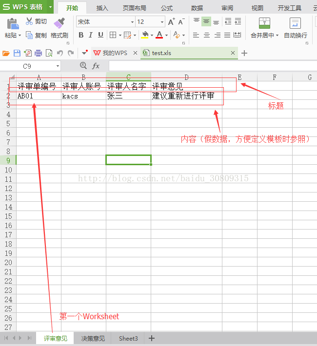
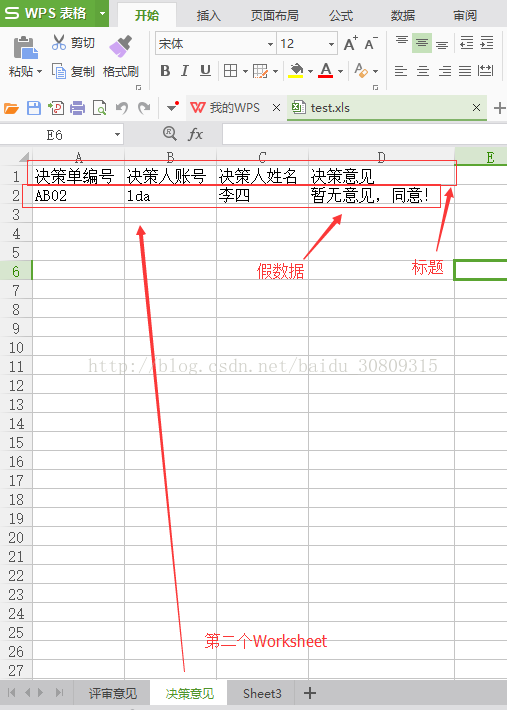
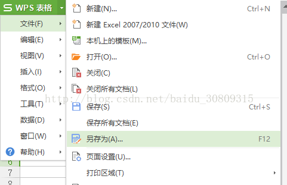
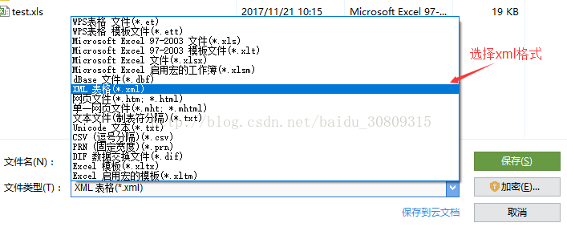

# 使用背景
公司项目中需要导出 Excel，使用了 freemarker 模板。
# 操作步骤
- 首先自己新建一个 Excel 表格，在里面写好自己的格式（最好同时写好一行假数据），


- 然后另存为 xml 格式的文件


- 使用 nopad++ 或其他编辑器打开 xml 文件（最好代码格式化一下），可以看到样式和数据都已经生成好了，我们可以直接将这个 xml 文件作为我们的 free marker 模板（拿来即用）
<?xml version="1.0" encoding="utf-8"?> | |
<?mso-application progid="Excel.Sheet"?> | |
<Workbook xmlns="urn:schemas-microsoft-com:office:spreadsheet" xmlns:o="urn:schemas-microsoft-com:office:office" xmlns:x="urn:schemas-microsoft-com:office:excel" xmlns:ss="urn:schemas-microsoft-com:office:spreadsheet" xmlns:html="http://www.w3.org/TR/REC-html40" xmlns:dt="uuid:C2F41010-65B3-11d1-A29F-00AA00C14882"> | |
<DocumentProperties xmlns="urn:schemas-microsoft-com:office:office"> | |
<Author>mcchu</Author> | |
<LastAuthor>mcchu</LastAuthor> | |
<Created>2017-11-21T02:10:46Z</Created> | |
<LastSaved>2017-11-21T02:22:14Z</LastSaved> | |
</DocumentProperties> | |
<CustomDocumentProperties xmlns="urn:schemas-microsoft-com:office:office"> | |
<KSOProductBuildVer dt:dt="string">2052-10.1.0.6930</KSOProductBuildVer> | |
</CustomDocumentProperties> | |
<ExcelWorkbook xmlns="urn:schemas-microsoft-com:office:excel"> | |
<WindowWidth>20385</WindowWidth> | |
<WindowHeight>8370</WindowHeight> | |
<ActiveSheet>1</ActiveSheet> | |
<ProtectStructure>False</ProtectStructure> | |
<ProtectWindows>False</ProtectWindows> | |
</ExcelWorkbook> | |
<Styles> | |
<Style ss:ID="s46" ss:Name="强调文字颜色 6"> | |
<Font ss:FontName="宋体" x:CharSet="0" ss:Size="11" ss:Color="#FFFFFF"/> | |
<Interior ss:Color="#70AD47" ss:Pattern="Solid"/> | |
</Style> | |
<Style ss:ID="s33" ss:Name="20% - 强调文字颜色 5"> | |
<Font ss:FontName="宋体" x:CharSet="0" ss:Size="11" ss:Color="#000000"/> | |
<Interior ss:Color="#D9E1F2" ss:Pattern="Solid"/> | |
</Style> | |
<Style ss:ID="s32" ss:Name="适中"> | |
<Font ss:FontName="宋体" x:CharSet="0" ss:Size="11" ss:Color="#9C6500"/> | |
<Interior ss:Color="#FFEB9C" ss:Pattern="Solid"/> | |
</Style> | |
<Style ss:ID="s14" ss:Name="60% - 强调文字颜色 2"> | |
<Font ss:FontName="宋体" x:CharSet="0" ss:Size="11" ss:Color="#FFFFFF"/> | |
<Interior ss:Color="#F4B084" ss:Pattern="Solid"/> | |
</Style> | |
<Style ss:ID="s7" ss:Name="差"> | |
<Font ss:FontName="宋体" x:CharSet="0" ss:Size="11" ss:Color="#9C0006"/> | |
<Interior ss:Color="#FFC7CE" ss:Pattern="Solid"/> | |
</Style> | |
<Style ss:ID="s8" ss:Name="千位分隔"> | |
<NumberFormat ss:Format="_ * #,##0.00_ ;_ * \-#,##0.00_ ;_ * "-"??_ ;_ @_ "/> | |
</Style> | |
<Style ss:ID="s42" ss:Name="40% - 强调文字颜色 4"> | |
<Font ss:FontName="宋体" x:CharSet="0" ss:Size="11" ss:Color="#000000"/> | |
<Interior ss:Color="#FFE699" ss:Pattern="Solid"/> | |
</Style> | |
<Style ss:ID="s36" ss:Name="40% - 强调文字颜色 1"> | |
<Font ss:FontName="宋体" x:CharSet="0" ss:Size="11" ss:Color="#000000"/> | |
<Interior ss:Color="#BDD7EE" ss:Pattern="Solid"/> | |
</Style> | |
<Style ss:ID="s20" ss:Name="标题 2"> | |
<Borders> | |
<Border ss:Position="Bottom" ss:LineStyle="Continuous" ss:Weight="2" ss:Color="#5B9BD5"/> | |
</Borders> | |
<Font ss:FontName="宋体" x:CharSet="134" ss:Size="13" ss:Color="#44546A" ss:Bold="1"/> | |
</Style> | |
<Style ss:ID="s16" ss:Name="警告文本"> | |
<Font ss:FontName="宋体" x:CharSet="0" ss:Size="11" ss:Color="#FF0000"/> | |
</Style> | |
<Style ss:ID="s1" ss:Name="货币[0]"> | |
<NumberFormat ss:Format="_ "￥"* #,##0_ ;_ "￥"* \-#,##0_ ;_ "￥"* "-"_ ;_ @_ "/> | |
</Style> | |
<Style ss:ID="s3" ss:Name="输入"> | |
<Borders> | |
<Border ss:Position="Bottom" ss:LineStyle="Continuous" ss:Weight="1" ss:Color="#7F7F7F"/> | |
<Border ss:Position="Left" ss:LineStyle="Continuous" ss:Weight="1" ss:Color="#7F7F7F"/> | |
<Border ss:Position="Right" ss:LineStyle="Continuous" ss:Weight="1" ss:Color="#7F7F7F"/> | |
<Border ss:Position="Top" ss:LineStyle="Continuous" ss:Weight="1" ss:Color="#7F7F7F"/> | |
</Borders> | |
<Font ss:FontName="宋体" x:CharSet="0" ss:Size="11" ss:Color="#3F3F76"/> | |
<Interior ss:Color="#FFCC99" ss:Pattern="Solid"/> | |
</Style> | |
<Style ss:ID="s6" ss:Name="40% - 强调文字颜色 3"> | |
<Font ss:FontName="宋体" x:CharSet="0" ss:Size="11" ss:Color="#000000"/> | |
<Interior ss:Color="#DBDBDB" ss:Pattern="Solid"/> | |
</Style> | |
<Style ss:ID="s31" ss:Name="好"> | |
<Font ss:FontName="宋体" x:CharSet="0" ss:Size="11" ss:Color="#006100"/> | |
<Interior ss:Color="#C6EFCE" ss:Pattern="Solid"/> | |
</Style> | |
<Style ss:ID="s25" ss:Name="计算"> | |
<Borders> | |
<Border ss:Position="Bottom" ss:LineStyle="Continuous" ss:Weight="1" ss:Color="#7F7F7F"/> | |
<Border ss:Position="Left" ss:LineStyle="Continuous" ss:Weight="1" ss:Color="#7F7F7F"/> | |
<Border ss:Position="Right" ss:LineStyle="Continuous" ss:Weight="1" ss:Color="#7F7F7F"/> | |
<Border ss:Position="Top" ss:LineStyle="Continuous" ss:Weight="1" ss:Color="#7F7F7F"/> | |
</Borders> | |
<Font ss:FontName="宋体" x:CharSet="0" ss:Size="11" ss:Color="#FA7D00" ss:Bold="1"/> | |
<Interior ss:Color="#F2F2F2" ss:Pattern="Solid"/> | |
</Style> | |
<Style ss:ID="s19" ss:Name="标题 1"> | |
<Borders> | |
<Border ss:Position="Bottom" ss:LineStyle="Continuous" ss:Weight="2" ss:Color="#5B9BD5"/> | |
</Borders> | |
<Font ss:FontName="宋体" x:CharSet="134" ss:Size="15" ss:Color="#44546A" ss:Bold="1"/> | |
</Style> | |
<Style ss:ID="s13" ss:Name="注释"> | |
<Borders> | |
<Border ss:Position="Bottom" ss:LineStyle="Continuous" ss:Weight="1" ss:Color="#B2B2B2"/> | |
<Border ss:Position="Left" ss:LineStyle="Continuous" ss:Weight="1" ss:Color="#B2B2B2"/> | |
<Border ss:Position="Right" ss:LineStyle="Continuous" ss:Weight="1" ss:Color="#B2B2B2"/> | |
<Border ss:Position="Top" ss:LineStyle="Continuous" ss:Weight="1" ss:Color="#B2B2B2"/> | |
</Borders> | |
<Interior ss:Color="#FFFFCC" ss:Pattern="Solid"/> | |
</Style> | |
<Style ss:ID="s9" ss:Name="60% - 强调文字颜色 3"> | |
<Font ss:FontName="宋体" x:CharSet="0" ss:Size="11" ss:Color="#FFFFFF"/> | |
<Interior ss:Color="#C9C9C9" ss:Pattern="Solid"/> | |
</Style> | |
<Style ss:ID="s5" ss:Name="千位分隔[0]"> | |
<NumberFormat ss:Format="_ * #,##0_ ;_ * \-#,##0_ ;_ * "-"_ ;_ @_ "/> | |
</Style> | |
<Style ss:ID="s44" ss:Name="40% - 强调文字颜色 5"> | |
<Font ss:FontName="宋体" x:CharSet="0" ss:Size="11" ss:Color="#000000"/> | |
<Interior ss:Color="#B4C6E7" ss:Pattern="Solid"/> | |
</Style> | |
<Style ss:ID="s35" ss:Name="20% - 强调文字颜色 1"> | |
<Font ss:FontName="宋体" x:CharSet="0" ss:Size="11" ss:Color="#000000"/> | |
<Interior ss:Color="#DDEBF7" ss:Pattern="Solid"/> | |
</Style> | |
<Style ss:ID="s27" ss:Name="20% - 强调文字颜色 6"> | |
<Font ss:FontName="宋体" x:CharSet="0" ss:Size="11" ss:Color="#000000"/> | |
<Interior ss:Color="#E2EFDA" ss:Pattern="Solid"/> | |
</Style> | |
<Style ss:ID="s17" ss:Name="标题"> | |
<Font ss:FontName="宋体" x:CharSet="134" ss:Size="18" ss:Color="#44546A" ss:Bold="1"/> | |
</Style> | |
<Style ss:ID="s15" ss:Name="标题 4"> | |
<Font ss:FontName="宋体" x:CharSet="134" ss:Size="11" ss:Color="#44546A" ss:Bold="1"/> | |
</Style> | |
<Style ss:ID="s10" ss:Name="超链接"> | |
<Font ss:FontName="宋体" x:CharSet="0" ss:Size="11" ss:Color="#0000FF" ss:Underline="Single"/> | |
</Style> | |
<Style ss:ID="s4" ss:Name="货币"> | |
<NumberFormat ss:Format="_ "￥"* #,##0.00_ ;_ "￥"* \-#,##0.00_ ;_ "￥"* "-"??_ ;_ @_ "/> | |
</Style> | |
<Style ss:ID="s45" ss:Name="60% - 强调文字颜色 5"> | |
<Font ss:FontName="宋体" x:CharSet="0" ss:Size="11" ss:Color="#FFFFFF"/> | |
<Interior ss:Color="#8EA9DB" ss:Pattern="Solid"/> | |
</Style> | |
<Style ss:ID="s29" ss:Name="链接单元格"> | |
<Borders> | |
<Border ss:Position="Bottom" ss:LineStyle="Double" ss:Weight="3" ss:Color="#FF8001"/> | |
</Borders> | |
<Font ss:FontName="宋体" x:CharSet="0" ss:Size="11" ss:Color="#FA7D00"/> | |
</Style> | |
<Style ss:ID="s23" ss:Name="60% - 强调文字颜色 4"> | |
<Font ss:FontName="宋体" x:CharSet="0" ss:Size="11" ss:Color="#FFFFFF"/> | |
<Interior ss:Color="#FFD966" ss:Pattern="Solid"/> | |
</Style> | |
<Style ss:ID="s21" ss:Name="60% - 强调文字颜色 1"> | |
<Font ss:FontName="宋体" x:CharSet="0" ss:Size="11" ss:Color="#FFFFFF"/> | |
<Interior ss:Color="#9BC2E6" ss:Pattern="Solid"/> | |
</Style> | |
<Style ss:ID="Default" ss:Name="Normal"> | |
<Alignment/> | |
<Borders/> | |
<Font ss:FontName="宋体" x:CharSet="134" ss:Size="12"/> | |
<Interior/> | |
<NumberFormat/> | |
<Protection/> | |
</Style> | |
<Style ss:ID="s2" ss:Name="20% - 强调文字颜色 3"> | |
<Font ss:FontName="宋体" x:CharSet="0" ss:Size="11" ss:Color="#000000"/> | |
<Interior ss:Color="#EDEDED" ss:Pattern="Solid"/> | |
</Style> | |
<Style ss:ID="s47" ss:Name="40% - 强调文字颜色 6"> | |
<Font ss:FontName="宋体" x:CharSet="0" ss:Size="11" ss:Color="#000000"/> | |
<Interior ss:Color="#C6E0B4" ss:Pattern="Solid"/> | |
</Style> | |
<Style ss:ID="s37" ss:Name="20% - 强调文字颜色 2"> | |
<Font ss:FontName="宋体" x:CharSet="0" ss:Size="11" ss:Color="#000000"/> | |
<Interior ss:Color="#FCE4D6" ss:Pattern="Solid"/> | |
</Style> | |
<Style ss:ID="s34" ss:Name="强调文字颜色 1"> | |
<Font ss:FontName="宋体" x:CharSet="0" ss:Size="11" ss:Color="#FFFFFF"/> | |
<Interior ss:Color="#5B9BD5" ss:Pattern="Solid"/> | |
</Style> | |
<Style ss:ID="s28" ss:Name="强调文字颜色 2"> | |
<Font ss:FontName="宋体" x:CharSet="0" ss:Size="11" ss:Color="#FFFFFF"/> | |
<Interior ss:Color="#ED7D31" ss:Pattern="Solid"/> | |
</Style> | |
<Style ss:ID="s24" ss:Name="输出"> | |
<Borders> | |
<Border ss:Position="Bottom" ss:LineStyle="Continuous" ss:Weight="1" ss:Color="#3F3F3F"/> | |
<Border ss:Position="Left" ss:LineStyle="Continuous" ss:Weight="1" ss:Color="#3F3F3F"/> | |
<Border ss:Position="Right" ss:LineStyle="Continuous" ss:Weight="1" ss:Color="#3F3F3F"/> | |
<Border ss:Position="Top" ss:LineStyle="Continuous" ss:Weight="1" ss:Color="#3F3F3F"/> | |
</Borders> | |
<Font ss:FontName="宋体" x:CharSet="0" ss:Size="11" ss:Color="#3F3F3F" ss:Bold="1"/> | |
<Interior ss:Color="#F2F2F2" ss:Pattern="Solid"/> | |
</Style> | |
<Style ss:ID="s18" ss:Name="解释性文本"> | |
<Font ss:FontName="宋体" x:CharSet="0" ss:Size="11" ss:Color="#7F7F7F" ss:Italic="1"/> | |
</Style> | |
<Style ss:ID="s12" ss:Name="已访问的超链接"> | |
<Font ss:FontName="宋体" x:CharSet="0" ss:Size="11" ss:Color="#800080" ss:Underline="Single"/> | |
</Style> | |
<Style ss:ID="s11" ss:Name="百分比"> | |
<NumberFormat ss:Format="0%"/> | |
</Style> | |
<Style ss:ID="s48" ss:Name="60% - 强调文字颜色 6"> | |
<Font ss:FontName="宋体" x:CharSet="0" ss:Size="11" ss:Color="#FFFFFF"/> | |
<Interior ss:Color="#A9D08E" ss:Pattern="Solid"/> | |
</Style> | |
<Style ss:ID="s40" ss:Name="强调文字颜色 4"> | |
<Font ss:FontName="宋体" x:CharSet="0" ss:Size="11" ss:Color="#FFFFFF"/> | |
<Interior ss:Color="#FFC000" ss:Pattern="Solid"/> | |
</Style> | |
<Style ss:ID="s38" ss:Name="40% - 强调文字颜色 2"> | |
<Font ss:FontName="宋体" x:CharSet="0" ss:Size="11" ss:Color="#000000"/> | |
<Interior ss:Color="#F8CBAD" ss:Pattern="Solid"/> | |
</Style> | |
<Style ss:ID="s26" ss:Name="检查单元格"> | |
<Borders> | |
<Border ss:Position="Bottom" ss:LineStyle="Double" ss:Weight="3" ss:Color="#3F3F3F"/> | |
<Border ss:Position="Left" ss:LineStyle="Double" ss:Weight="3" ss:Color="#3F3F3F"/> | |
<Border ss:Position="Right" ss:LineStyle="Double" ss:Weight="3" ss:Color="#3F3F3F"/> | |
<Border ss:Position="Top" ss:LineStyle="Double" ss:Weight="3" ss:Color="#3F3F3F"/> | |
</Borders> | |
<Font ss:FontName="宋体" x:CharSet="0" ss:Size="11" ss:Color="#FFFFFF" ss:Bold="1"/> | |
<Interior ss:Color="#A5A5A5" ss:Pattern="Solid"/> | |
</Style> | |
<Style ss:ID="s22" ss:Name="标题 3"> | |
<Borders> | |
<Border ss:Position="Bottom" ss:LineStyle="Continuous" ss:Weight="2" ss:Color="#ACCCEA"/> | |
</Borders> | |
<Font ss:FontName="宋体" x:CharSet="134" ss:Size="11" ss:Color="#44546A" ss:Bold="1"/> | |
</Style> | |
<Style ss:ID="s43" ss:Name="强调文字颜色 5"> | |
<Font ss:FontName="宋体" x:CharSet="0" ss:Size="11" ss:Color="#FFFFFF"/> | |
<Interior ss:Color="#4472C4" ss:Pattern="Solid"/> | |
</Style> | |
<Style ss:ID="s39" ss:Name="强调文字颜色 3"> | |
<Font ss:FontName="宋体" x:CharSet="0" ss:Size="11" ss:Color="#FFFFFF"/> | |
<Interior ss:Color="#A5A5A5" ss:Pattern="Solid"/> | |
</Style> | |
<Style ss:ID="s30" ss:Name="汇总"> | |
<Borders> | |
<Border ss:Position="Bottom" ss:LineStyle="Double" ss:Weight="3" ss:Color="#5B9BD5"/> | |
<Border ss:Position="Top" ss:LineStyle="Continuous" ss:Weight="1" ss:Color="#5B9BD5"/> | |
</Borders> | |
<Font ss:FontName="宋体" x:CharSet="0" ss:Size="11" ss:Color="#000000" ss:Bold="1"/> | |
</Style> | |
<Style ss:ID="s41" ss:Name="20% - 强调文字颜色 4"> | |
<Font ss:FontName="宋体" x:CharSet="0" ss:Size="11" ss:Color="#000000"/> | |
<Interior ss:Color="#FFF2CC" ss:Pattern="Solid"/> | |
</Style> | |
<Style ss:ID="s49"/> | |
</Styles> | |
<Worksheet ss:Name="评审意见"> | |
<Table ss:ExpandedColumnCount="4" ss:ExpandedRowCount="2" x:FullColumns="1" x:FullRows="1" ss:DefaultColumnWidth="54" ss:DefaultRowHeight="14.25"> | |
<Column ss:Index="1" ss:StyleID="Default" ss:AutoFitWidth="0" ss:Width="69" ss:Span="2"/> | |
<Column ss:Index="4" ss:StyleID="Default" ss:AutoFitWidth="0" ss:Width="109.5"/> | |
<Row> | |
<Cell> | |
<Data ss:Type="String">评审单编号</Data> | |
</Cell> | |
<Cell> | |
<Data ss:Type="String">评审人账号</Data> | |
</Cell> | |
<Cell> | |
<Data ss:Type="String">评审人名字</Data> | |
</Cell> | |
<Cell> | |
<Data ss:Type="String">评审意见</Data> | |
</Cell> | |
</Row> | |
<Row> | |
<Cell> | |
<Data ss:Type="String">AB01</Data> | |
</Cell> | |
<Cell> | |
<Data ss:Type="String">kacs</Data> | |
</Cell> | |
<Cell> | |
<Data ss:Type="String">张三</Data> | |
</Cell> | |
<Cell> | |
<Data ss:Type="String">建议重新进行评审</Data> | |
</Cell> | |
</Row> | |
</Table> | |
<WorksheetOptions xmlns="urn:schemas-microsoft-com:office:excel"> | |
<PageSetup> | |
<Header x:Margin="0.511111111111111"/> | |
<Footer x:Margin="0.511111111111111"/> | |
</PageSetup> | |
<TopRowVisible>0</TopRowVisible> | |
<LeftColumnVisible>0</LeftColumnVisible> | |
<PageBreakZoom>100</PageBreakZoom> | |
<Panes> | |
<Pane> | |
<Number>3</Number> | |
<ActiveRow>8</ActiveRow> | |
<ActiveCol>2</ActiveCol> | |
<RangeSelection>R9C3</RangeSelection> | |
</Pane> | |
</Panes> | |
<ProtectObjects>False</ProtectObjects> | |
<ProtectScenarios>False</ProtectScenarios> | |
</WorksheetOptions> | |
</Worksheet> | |
<Worksheet ss:Name="决策意见"> | |
<Table ss:ExpandedColumnCount="4" ss:ExpandedRowCount="2" x:FullColumns="1" x:FullRows="1" ss:DefaultColumnWidth="54" ss:DefaultRowHeight="14.25"> | |
<Column ss:Index="1" ss:StyleID="Default" ss:AutoFitWidth="0" ss:Width="69" ss:Span="2"/> | |
<Column ss:Index="4" ss:StyleID="Default" ss:AutoFitWidth="0" ss:Width="109.5"/> | |
<Row> | |
<Cell> | |
<Data ss:Type="String">决策单编号</Data> | |
</Cell> | |
<Cell> | |
<Data ss:Type="String">决策人账号</Data> | |
</Cell> | |
<Cell> | |
<Data ss:Type="String">决策人姓名</Data> | |
</Cell> | |
<Cell> | |
<Data ss:Type="String">决策意见</Data> | |
</Cell> | |
</Row> | |
<Row> | |
<Cell> | |
<Data ss:Type="String">AB02</Data> | |
</Cell> | |
<Cell> | |
<Data ss:Type="String">lda</Data> | |
</Cell> | |
<Cell> | |
<Data ss:Type="String">李四</Data> | |
</Cell> | |
<Cell> | |
<Data ss:Type="String">暂无意见，同意！</Data> | |
</Cell> | |
</Row> | |
</Table> | |
<WorksheetOptions xmlns="urn:schemas-microsoft-com:office:excel"> | |
<PageSetup> | |
<Header x:Margin="0.511111111111111"/> | |
<Footer x:Margin="0.511111111111111"/> | |
</PageSetup> | |
<Selected/> | |
<TopRowVisible>0</TopRowVisible> | |
<LeftColumnVisible>0</LeftColumnVisible> | |
<PageBreakZoom>100</PageBreakZoom> | |
<Panes> | |
<Pane> | |
<Number>3</Number> | |
<ActiveRow>5</ActiveRow> | |
<ActiveCol>4</ActiveCol> | |
<RangeSelection>R6C5</RangeSelection> | |
</Pane> | |
</Panes> | |
<ProtectObjects>False</ProtectObjects> | |
<ProtectScenarios>False</ProtectScenarios> | |
</WorksheetOptions> | |
</Worksheet> | |
<Worksheet ss:Name="Sheet3"> | |
<Table ss:ExpandedColumnCount="1" ss:ExpandedRowCount="1" x:FullColumns="1" x:FullRows="1" ss:DefaultColumnWidth="54" ss:DefaultRowHeight="14.25"/> | |
<WorksheetOptions xmlns="urn:schemas-microsoft-com:office:excel"> | |
<PageSetup> | |
<Header x:Margin="0.511111111111111"/> | |
<Footer x:Margin="0.511111111111111"/> | |
</PageSetup> | |
<TopRowVisible>0</TopRowVisible> | |
<LeftColumnVisible>0</LeftColumnVisible> | |
<PageBreakZoom>100</PageBreakZoom> | |
<ProtectObjects>False</ProtectObjects> | |
<ProtectScenarios>False</ProtectScenarios> | |
</WorksheetOptions> | |
</Worksheet> | |
</Workbook> |
- 注意替换上面的测试数据，就是刚刚定义的假数据，将他们改成 freemarker 语法规定的变量格式，因为我们要去后台接收数据，做好和实体属性的映射，以决策为例子，处理后如下，注意有些编辑器对此 xml 的解析会报错，不用管它：
<!-- ExpandedRowCount 这个属性是做行数显示控制，我们根据返回的 List 对象长度，再加上 1 行标题，最为他的总行数显示 --> | |
<Table ss:ExpandedColumnCount="4" ss:ExpandedRowCount="${decisions?size+1}" x:FullColumns="1" x:FullRows="1" ss:DefaultColumnWidth="54" ss:DefaultRowHeight="14.25"> | |
<Column ss:Index="1" ss:StyleID="Default" ss:AutoFitWidth="0" ss:Width="69" ss:Span="2"/> | |
<Column ss:Index="4" ss:StyleID="Default" ss:AutoFitWidth="0" ss:Width="109.5"/> | |
<Row> | |
<Cell> | |
<Data ss:Type="String">决策单编号</Data> | |
</Cell> | |
<Cell> | |
<Data ss:Type="String">决策人账号</Data> | |
</Cell> | |
<Cell> | |
<Data ss:Type="String">决策人姓名</Data> | |
</Cell> | |
<Cell> | |
<Data ss:Type="String">决策意见</Data> | |
</Cell> | |
</Row> | |
<#if decisions?exists && decisions??> <!-- 这里是给 decisions 这个对象做判空 --> | |
<#list decisions as item> <!-- 这里是给 decisions 这个对象做遍历 --> | |
<Row> | |
<Cell> | |
<Data ss:Type="String"> ${item.decisionCode!'这个单元格为空'} </Data> <!-- 这里是给 decisions 这个对象的 decisionCode 做判空处理，若为空，则显示 “这个单元格为空” --> | |
</Cell> | |
<Cell> | |
<Data ss:Type="String"> ${item.decisionAccount!''} </Data> <!-- 这里是给 decisions 这个对象的 decisionCode 做判空处理，若为空，则不显示 --> | |
</Cell> | |
<Cell> | |
<Data ss:Type="String"> ${item.decisionUsername!''} </Data> | |
</Cell> | |
<Cell> | |
<Data ss:Type="String"> ${item.decisionOpinion!''} </Data> | |
</Cell> | |
</Row> | |
</#list> | |
</#if> | |
</Table> |
- 此时，我们的 freemarker 简单模板就做好了，下面我们定义一个 bean，注入 freemarker
<bean id="freeMarkerConfiguration" class="org.springframework.ui.freemarker.FreeMarkerConfigurationFactoryBean"> | |
<property name="templateLoaderPath" value="classpath:com/demo/resources/template" /> | |
<property name="defaultEncoding" value="utf-8" /> | |
</bean> |
将我们刚刚创建好的模板放在项目的 com/demo/resources/template 目录下（就是 bean 中配置的路径）
- 注入 freemarker bean 并实现导出功能：
@Autowired | |
private Configuration freemarkerConfiguration; // 注入 bean，这里是属性注入，推荐构造注入 | |
/** | |
* 下载 Excel | |
*/ | |
@RequestMapping("downloadExcel") | |
public void downloadExcel( HttpServletRequest request,HttpServletResponse response ){ | |
try { | |
// 封装导出数据 | |
List<RequisitionReviewExportVo> exportReviewList = requisitionService.exportReviewList(requisitionCondition); | |
List<RequisitionDecisionExportVo> exportDecisionList = requisitionService.exportDecisionList(requisitionCondition); | |
Map data=new HashMap(); | |
data.put("reviews",exportReviewList); // 第一个 worksheet 的数据对象 | |
data.put("decisions",exportDecisionList); // 第二个 worksheet 的数据对象 | |
// 导出 | |
request.setCharacterEncoding("UTF-8"); | |
response.setContentType("application/x-download;"); | |
response.setHeader("Content-disposition", "attachment; filename=" | |
+ new String("导出的文件名字.xls".getBytes("gb2312"), "ISO8859-1")); | |
freemarkerConfiguration.getTemplate("export-format-requisition.xml").process(data,response.getWriter()); | |
}catch (Exception e){ | |
log.error("文件下载异常", e); | |
e.printStackTrace(); | |
} | |
} |
遇到的问题：
- 使用 xml 作为 freemarker 模板时，一些含有特殊字符的变量会被 xml 转译，导致导出结果显示错误，此时可以使用 apache common lang3 包下的工具处理：
org.apache.commons.lang3.StringEscapeUtils.escapeXml( "<张三>!" ) |
使用 freemarker 在模板中做日期格式处理时遇到问题，处理年月日时显示正常，但如果传值为 null 时，显示”1900/1/0“，改成了从后台使用 SimpleDateFormat 处理。
日期处理中时分秒的单独显示未成功，参考使用了以下 3 中解析方式，都没有解析成功，可能是其他地方错了，改成了从后台使用 SimpleDateFormat 处理。
${reviews.date?string('hh:mm:ss')}
${reviews.date?string('HH:mm:ss')}
${reviews.date?time('hh:mm:ss')}
- 给特定格式的日期做判空，为空时不显示，改成如下
${(reviews.createTime?string('yyyy-MM-dd'))!''}